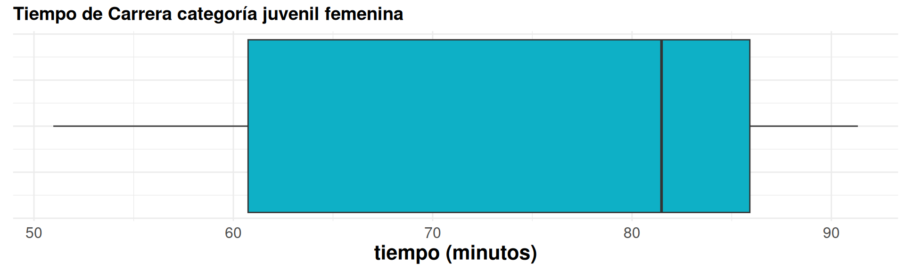

Una vez que se han organizado los datos y se ha observado su distribución a través de tablas o gráficos de frecuencias, en ocasiones se requiere de indicadores que resuman los datos, es decir que en forma muy directa puedan indicar rasgos importantes de las observaciones,como su magnitud, su homogeneidad y su simetría. Medidos a través de un único valor representan todo el conjunto de observaciones. Entre los principales indicadores de tendencia central se encuentran: La media aritmética o promedio aritmético (o simplemente media o promedio), la mediana y la moda.
Es el indicador de tendencia central más conocido y utilizado por su fácil interpretación y calculo. Consiste en sumar todos los valores de un conjunto de datos y dividirlos por el número de datos.
\[\bar{x}= \frac{1}{n} \sum_{i=1}^{n} x_{i}\]
La siguiente es la información de los tiempos correspondientes a la categoría juvenil femenina:
library(paqueteMETODOS)
data("CarreraLu22_c1F")
x= round(CarreraLuz22_c1F$timerun/60, 2)
x
cat("n = ", length(x), "\n")
cat("suma = ", sum(x), "\n")
cat("promedio = ", mean(x))mean(x)50.97 60.38 61.10 81.48 83.05 88.77 91.33 n = 7 suma = 517.08 promedio = 73.86857 [1] 73.86857
Las mujeres de la categoría juveniles presentan promedio del tiempo de carrera de 73.86 minutos.
La suma de las desviaciones de los datos con respecto a la media es cero. \(\sum (x_{i}-\bar{x})=0\).
La suma de los cuadrados de las desviaciones de los datos con respecto a un valor \(a\) es mínimo cuando \(a=\bar{x}\).
Si \(x_{i}=k\) para todo \(i\), entonces, \(\bar{x}=k\).
Si todos los datos de una variable se multiplican por una constante \(k\), es decir \(y_{i}=kx_{i}\), entonces \(\bar{y}=k\bar{x}\)
Si \(z_{i}=a x_{i}+b y_{i}\), donde: a, b constantes y \(x_{i}\), \(y_{i}\) variables, entonces: \(\bar{z}=a\bar{x}+b\bar{y}\).
La mediana es el número que divide la muestra en dos partes de igual proporción (50% : 50%). Es decir que corresponde al percentil 50.
\[Me = \left \{ \begin{matrix} \dfrac{x_{(n+1)}}{2} & \mbox{ si n es impar }\\ & \\ \dfrac{x_{(n/2)}+ x_{(n/2)+1}}{2} & \mbox{si n es par} \end{matrix}\right. \]
\[Me = P_{50} = D_{5} = Q_{2} \]
Continuando con la misma información sobre los tiempos correspondientes a la categoría juvenil femenina:
x= round(CarreraLuz22_c1F$timerun/60, 2)
x
cat("mediana = ", median(x))x1 x2 x3 x4 x5 x6 x7 [1] 50.97 60.38 61.10 81.48 83.05 88.77 91.33 mediana = x4 = 81.48 n = 7
Lo que indica que \(Me\) el dato que está en la posición \(4\)
\(Me = x_{4} = 81.48\)
library(paqueteMETODOS)
data("CarreraLu22_c1F")
x= round(CarreraLuz22_c1F$timerun/60, 2)
boxplot(x)library(ggplot2)
library(paqueteMETODOS)
data("CarreraLuz22_c1F")
# Crear un gráfico de caja horizontal con ggplot2
x = round(CarreraLuz22_c1F$timerun/60, 2)
df <- data.frame(x = x)
ggplot(df, aes(x = x)) +
geom_boxplot(fill = "#0EB0C6") +
theme_minimal() +
labs(title = "Tiempo de Carrera categoría juvenil femenina",
x = "tiempo (minutos)")+
Theme1
La línea central de las cajas representan las medianas. En ellas se puede evidenciar el valor mayor del grupo juvenil femenino.
La moda corresponde al dato o valor que más se repite. Es utilizada como medida de tendencia central en variables cualitativas o en cuantitativas discretas con pocos valores.
Variable moda ------------------ sexo hombre categoría abierta origen cali ------------------
Valida los resultados anteriores
Los datos de la carrera indican que la categoría Abierta representa la categoría con mayor participación
Moda : categoría Abierta
library(paqueteMETODOS)
data("CarreraLuz22")
table(CarreraLuz22$categoria)Con el fin de evitar que los datos atípicos generen sesgos en el indicador de la media, es posible separar el 90% central de los datos, quitando un 5% de los datos más pequeños y un 5% de los datos mayores. A este indicador se le llama media truncada al 10% (\(\bar{x}_{_{0.10}}\))
x1 x2 x3 x4 x5 x6 x7 x8 x9 x10 x11 x12 41.67, 42.23, 45.53, 50.82, 52.93, 57.03, 61.13, 62.48, 72.77, 75.58, 76.98, 78.05 (42.23, 45.53, 50.82, 52.93, 57.03, 61.13, 62.48, 72.77, 75.58, 76.98) media truncada al 10% : 59.748
x= c(41.67, 42.23, 45.53, 50.82, 52.93, 57.03, 61.13, 62.48, 72.77, 75.58, 76.98, 78.05)
mean(x, 0.10)El rango medio se obtiene al sumar los valores extremos ( mínimo y máximo) y dividir el resultado por dos. Este indicador es de fácil cálculo y útil cuando se desea una estimación empírica y alta precisión en datos simétricos.
\[r = \frac{1}{2}\Big(\max(x)+\min(x)\Big)\]
min max 41.67, 42.23, 45.53, 50.82, 52.93, 57.03, 61.13, 62.48, 72.77, 75.58, 76.98, 78.05
x=c(41.67, 42.23, 45.53, 50.82, 52.93, 57.03, 61.13, 62.48, 72.77, 75.58, 76.98, 78.05)
range(x)\[\text{rango medio} = \dfrac{41.67 + 78.05}{2} = 59.86 \]
x=c(41.67, 42.23, 45.53, 50.82, 52.93, 57.03, 61.13, 62.48, 72.77, 75.58, 76.98, 78.05)
sum(range(x))/2